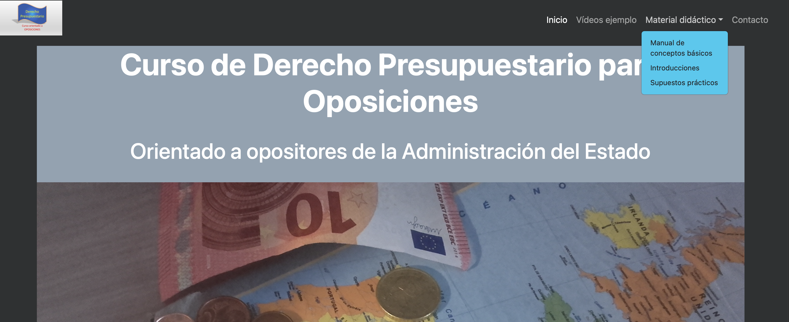

Desarrollo de página de promoción de un curso online
Ver repositorio en GitHub
Propósito del proyecto
Este proyecto nació mientras estudiaba por mi cuenta desarrollo web en freeCodeCamp.org, con la intención de aplicar lo aprendido en un caso práctico y real. En lugar de limitarme a replicar ejercicios genéricos, decidí desarrollar una página web desde cero como parte de mi propio proceso formativo.
Tuve la oportunidad de trabajar sobre un curso online de Derecho Presupuestario que impartía un familiar, quien en un principio no contemplaba tener presencia web. Aun así, desarrollé una primera versión funcional del sitio y se la presenté como ejemplo. Al ver el resultado, quedó convencido del potencial que tendría contar con una plataforma clara, visualmente atractiva y accesible para dar a conocer el curso. Finalmente, aceptó mi propuesta de llevarla a producción.
El impacto fue inmediato. La web permitió aumentar la visibilidad del curso, centralizar la información de forma profesional y gestionar las consultas a través de un formulario, mejorando la comunicación con los interesados. Esto se tradujo en un incremento directo de las inscripciones y, por tanto, de los ingresos.
Tiempo después, el proyecto creció con la publicación de materiales complementarios, como libros de apoyo al estudio y colecciones de supuestos prácticos resueltos. Gracias al diseño modular y al enfoque escalable que había aplicado desde el principio, incorporar esta nueva oferta a la web fue sencillo y rápido. Esto permitió responder de forma ágil a la demanda, y con el tiempo, la venta de estos materiales se ha convertido en la principal fuente de ingresos del curso, en buena parte gracias a la claridad del diseño y la experiencia de usuario que ofrece el sitio.
Responsabilidades
Este proyecto fue concebido y ejecutado de forma íntegra por mí. Me encargué de:
- Diseñar y estructurar el contenido.
- Desarrollar la interfaz y experiencia de usuario.
- Implementar funcionalidades con HTML, CSS y JavaScript.
- Configurar el entorno de pruebas con GitHub Pages.
- Publicar la versión final en producción mediante Hostinger.
- Asegurar la evolución del proyecto mediante revisiones iterativas junto al cliente (el docente del curso).
Durante el desarrollo, apliqué principios de la metodología AGILE, dividiendo el trabajo en pequeños sprints funcionales. Esto permitió que el cliente tuviera visibilidad constante sobre el progreso y pudiera validar, sugerir y aprobar mejoras de forma progresiva, asegurando que el resultado final se ajustase a sus expectativas reales.
Tecnologías utilizadas
- HTML5 – Estructura semántica del contenido.
- CSS3 – Estilos personalizados y diseño responsive.
- JavaScript (vanilla) – Lógica e interactividad sin dependencias externas.
- Git y GitHub – Control de versiones y pruebas en GitHub Pages.
- Hostinger – Entorno de producción con dominio propio.
Principales desafíos
Uno de los principales retos fue diseñar una estructura clara y modular que facilitara futuras actualizaciones de contenido por parte de personas no técnicas. Además, lograr un diseño completamente responsive sin sacrificar claridad fue clave. Ambos desafíos se resolvieron mediante:
- Un enfoque mobile-first con Bootstrap 5.
- Separación del contenido en secciones reutilizables.
- Comentarios en el código y organización lógica de los archivos para facilitar el mantenimiento.
Enlace al sitio
🌐 derechopresupuestario.es 